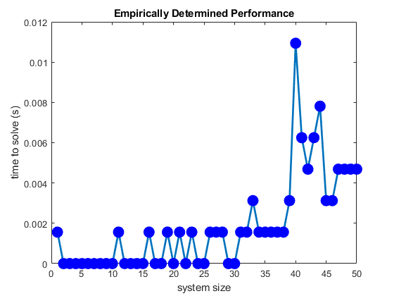
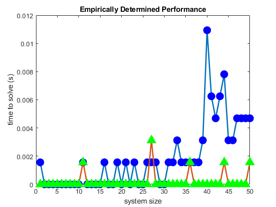
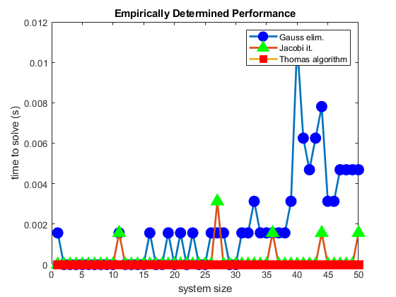

Contents
clear
clc
close all
nvals=1:1:50;
testtimes=zeros(size(nvals));
lrep=10;
Gaussian elimination
disp('Start of tests of Gaussian-elimination scaling');
for in=1:numel(nvals)
nlarge=nvals(in);
Blarge=diag(-1*ones(nlarge-1,1),-1)+diag(-1*ones(nlarge-1,1),1)+diag(4*ones(nlarge,1),0);
blarge=ones(nlarge,1);
for irep=1:lrep
tstart=cputime;
[Blargemod,ordlarge]=Gauss_elim(Blarge,blarge);
xlarge=backsub(Blargemod(ordlarge,:));
tend=cputime;
testtimes(in)=testtimes(in)+(tend-tstart)/lrep;
end
disp([' GE solution for system of size ',num2str(nlarge),' takes average time ',num2str(testtimes(in)),' s']);
end
TT(:,1) = testtimes';
figure(1);
plot(nvals,testtimes,'-o','LineWidth',2,'MarkerSize',10,'MarkerEdgeColor','blue','MarkerFaceColor','blue')
xlabel('system size');
ylabel('time to solve (s)');
title('Empirically Determined Performance');
Start of tests of Gaussian-elimination scaling
GE solution for system of size 1 takes average time 0.0015625 s
GE solution for system of size 2 takes average time 0 s
GE solution for system of size 3 takes average time 0 s
GE solution for system of size 4 takes average time 0 s
GE solution for system of size 5 takes average time 0 s
GE solution for system of size 6 takes average time 0 s
GE solution for system of size 7 takes average time 0 s
GE solution for system of size 8 takes average time 0 s
GE solution for system of size 9 takes average time 0 s
GE solution for system of size 10 takes average time 0 s
GE solution for system of size 11 takes average time 0.0015625 s
GE solution for system of size 12 takes average time 0 s
GE solution for system of size 13 takes average time 0 s
GE solution for system of size 14 takes average time 0 s
GE solution for system of size 15 takes average time 0 s
GE solution for system of size 16 takes average time 0.0015625 s
GE solution for system of size 17 takes average time 0 s
GE solution for system of size 18 takes average time 0 s
GE solution for system of size 19 takes average time 0.0015625 s
GE solution for system of size 20 takes average time 0 s
GE solution for system of size 21 takes average time 0.0015625 s
GE solution for system of size 22 takes average time 0 s
GE solution for system of size 23 takes average time 0.0015625 s
GE solution for system of size 24 takes average time 0 s
GE solution for system of size 25 takes average time 0 s
GE solution for system of size 26 takes average time 0.0015625 s
GE solution for system of size 27 takes average time 0.0015625 s
GE solution for system of size 28 takes average time 0.0015625 s
GE solution for system of size 29 takes average time 0 s
GE solution for system of size 30 takes average time 0 s
GE solution for system of size 31 takes average time 0.0015625 s
GE solution for system of size 32 takes average time 0.0015625 s
GE solution for system of size 33 takes average time 0.003125 s
GE solution for system of size 34 takes average time 0.0015625 s
GE solution for system of size 35 takes average time 0.0015625 s
GE solution for system of size 36 takes average time 0.0015625 s
GE solution for system of size 37 takes average time 0.0015625 s
GE solution for system of size 38 takes average time 0.0015625 s
GE solution for system of size 39 takes average time 0.003125 s
GE solution for system of size 40 takes average time 0.010937 s
GE solution for system of size 41 takes average time 0.00625 s
GE solution for system of size 42 takes average time 0.0046875 s
GE solution for system of size 43 takes average time 0.00625 s
GE solution for system of size 44 takes average time 0.0078125 s
GE solution for system of size 45 takes average time 0.003125 s
GE solution for system of size 46 takes average time 0.003125 s
GE solution for system of size 47 takes average time 0.0046875 s
GE solution for system of size 48 takes average time 0.0046875 s
GE solution for system of size 49 takes average time 0.0046875 s
GE solution for system of size 50 takes average time 0.0046875 s

Jacobi iteration
disp('Start of tests for Jacobi iteration');
tol=1e-9;
testtimes=zeros(size(nvals));
for in=1:numel(nvals)
nlarge=nvals(in);
Blarge=diag(-1*ones(nlarge-1,1),-1)+diag(-1*ones(nlarge-1,1),1)+diag(4*ones(nlarge,1),0);
blarge=ones(nlarge,1);
for irep=1:lrep
tstart=cputime;
x0=randn(nlarge,1);
[xit,iterations]=Jacobi(x0,Blarge,blarge,tol,false);
tend=cputime;
testtimes(in)=testtimes(in)+(tend-tstart)/lrep;
end
disp([' JI solution for system of size ',num2str(nlarge),' takes average time ',num2str(testtimes(in)),' s']);
end
TT(:,2) = testtimes';
figure(1);
hold on
plot(nvals,testtimes,'-^','LineWidth',2,'MarkerSize',10,'MarkerEdgeColor','green','MarkerFaceColor','green')
Start of tests for Jacobi iteration
JI solution for system of size 1 takes average time 0 s
JI solution for system of size 2 takes average time 0 s
JI solution for system of size 3 takes average time 0 s
JI solution for system of size 4 takes average time 0 s
JI solution for system of size 5 takes average time 0 s
JI solution for system of size 6 takes average time 0 s
JI solution for system of size 7 takes average time 0 s
JI solution for system of size 8 takes average time 0 s
JI solution for system of size 9 takes average time 0 s
JI solution for system of size 10 takes average time 0 s
JI solution for system of size 11 takes average time 0.0015625 s
JI solution for system of size 12 takes average time 0 s
JI solution for system of size 13 takes average time 0 s
JI solution for system of size 14 takes average time 0 s
JI solution for system of size 15 takes average time 0 s
JI solution for system of size 16 takes average time 0 s
JI solution for system of size 17 takes average time 0 s
JI solution for system of size 18 takes average time 0 s
JI solution for system of size 19 takes average time 0 s
JI solution for system of size 20 takes average time 0 s
JI solution for system of size 21 takes average time 0 s
JI solution for system of size 22 takes average time 0 s
JI solution for system of size 23 takes average time 0 s
JI solution for system of size 24 takes average time 0 s
JI solution for system of size 25 takes average time 0 s
JI solution for system of size 26 takes average time 0 s
JI solution for system of size 27 takes average time 0.003125 s
JI solution for system of size 28 takes average time 0 s
JI solution for system of size 29 takes average time 0 s
JI solution for system of size 30 takes average time 0 s
JI solution for system of size 31 takes average time 0 s
JI solution for system of size 32 takes average time 0 s
JI solution for system of size 33 takes average time 0 s
JI solution for system of size 34 takes average time 0 s
JI solution for system of size 35 takes average time 0 s
JI solution for system of size 36 takes average time 0.0015625 s
JI solution for system of size 37 takes average time 0 s
JI solution for system of size 38 takes average time 0 s
JI solution for system of size 39 takes average time 0 s
JI solution for system of size 40 takes average time 0 s
JI solution for system of size 41 takes average time 0 s
JI solution for system of size 42 takes average time 0 s
JI solution for system of size 43 takes average time 0 s
JI solution for system of size 44 takes average time 0.0015625 s
JI solution for system of size 45 takes average time 0 s
JI solution for system of size 46 takes average time 0 s
JI solution for system of size 47 takes average time 0 s
JI solution for system of size 48 takes average time 0 s
JI solution for system of size 49 takes average time 0 s
JI solution for system of size 50 takes average time 0.0015625 s

Thomas algorithm
disp('Start of tests for tridiag solver');
testtimes=zeros(size(nvals));
for in=1:numel(nvals)
nlarge=nvals(in);
Blarge=diag(-1*ones(nlarge-1,1),-1)+diag(-1*ones(nlarge-1,1),1)+diag(4*ones(nlarge,1),0);
blarge=ones(nlarge,1);
for irep=1:lrep
tstart=cputime;
[xit,iterations]=tridiag(Blarge,blarge);
tend=cputime;
testtimes(in)=testtimes(in)+(tend-tstart)/lrep;
end
disp([' TA solution for system of size ',num2str(nlarge),' takes average time ',num2str(testtimes(in)),' s']);
end
TT(:,3) = testtimes';
disp('Time required for GE, JI, & TA (s)')
disp(TT)
figure(1);
hold on
plot(nvals,testtimes,'-s','LineWidth',2,'MarkerSize',10,'MarkerEdgeColor','red','MarkerFaceColor','red')
legend('Gauss elim.','Jacobi it.','Thomas algorithm')
Start of tests for tridiag solver
TA solution for system of size 1 takes average time 0 s
TA solution for system of size 2 takes average time 0 s
TA solution for system of size 3 takes average time 0 s
TA solution for system of size 4 takes average time 0 s
TA solution for system of size 5 takes average time 0 s
TA solution for system of size 6 takes average time 0 s
TA solution for system of size 7 takes average time 0 s
TA solution for system of size 8 takes average time 0 s
TA solution for system of size 9 takes average time 0 s
TA solution for system of size 10 takes average time 0 s
TA solution for system of size 11 takes average time 0 s
TA solution for system of size 12 takes average time 0 s
TA solution for system of size 13 takes average time 0 s
TA solution for system of size 14 takes average time 0 s
TA solution for system of size 15 takes average time 0 s
TA solution for system of size 16 takes average time 0 s
TA solution for system of size 17 takes average time 0 s
TA solution for system of size 18 takes average time 0 s
TA solution for system of size 19 takes average time 0 s
TA solution for system of size 20 takes average time 0 s
TA solution for system of size 21 takes average time 0 s
TA solution for system of size 22 takes average time 0 s
TA solution for system of size 23 takes average time 0 s
TA solution for system of size 24 takes average time 0 s
TA solution for system of size 25 takes average time 0 s
TA solution for system of size 26 takes average time 0 s
TA solution for system of size 27 takes average time 0 s
TA solution for system of size 28 takes average time 0 s
TA solution for system of size 29 takes average time 0 s
TA solution for system of size 30 takes average time 0 s
TA solution for system of size 31 takes average time 0 s
TA solution for system of size 32 takes average time 0 s
TA solution for system of size 33 takes average time 0 s
TA solution for system of size 34 takes average time 0 s
TA solution for system of size 35 takes average time 0 s
TA solution for system of size 36 takes average time 0 s
TA solution for system of size 37 takes average time 0 s
TA solution for system of size 38 takes average time 0 s
TA solution for system of size 39 takes average time 0 s
TA solution for system of size 40 takes average time 0 s
TA solution for system of size 41 takes average time 0 s
TA solution for system of size 42 takes average time 0 s
TA solution for system of size 43 takes average time 0 s
TA solution for system of size 44 takes average time 0 s
TA solution for system of size 45 takes average time 0 s
TA solution for system of size 46 takes average time 0 s
TA solution for system of size 47 takes average time 0 s
TA solution for system of size 48 takes average time 0 s
TA solution for system of size 49 takes average time 0 s
TA solution for system of size 50 takes average time 0 s
Time required for GE, JI, & TA (s)
0.0016 0 0
0 0 0
0 0 0
0 0 0
0 0 0
0 0 0
0 0 0
0 0 0
0 0 0
0 0 0
0.0016 0.0016 0
0 0 0
0 0 0
0 0 0
0 0 0
0.0016 0 0
0 0 0
0 0 0
0.0016 0 0
0 0 0
0.0016 0 0
0 0 0
0.0016 0 0
0 0 0
0 0 0
0.0016 0 0
0.0016 0.0031 0
0.0016 0 0
0 0 0
0 0 0
0.0016 0 0
0.0016 0 0
0.0031 0 0
0.0016 0 0
0.0016 0 0
0.0016 0.0016 0
0.0016 0 0
0.0016 0 0
0.0031 0 0
0.0109 0 0
0.0063 0 0
0.0047 0 0
0.0063 0 0
0.0078 0.0016 0
0.0031 0 0
0.0031 0 0
0.0047 0 0
0.0047 0 0
0.0047 0 0
0.0047 0.0016 0
